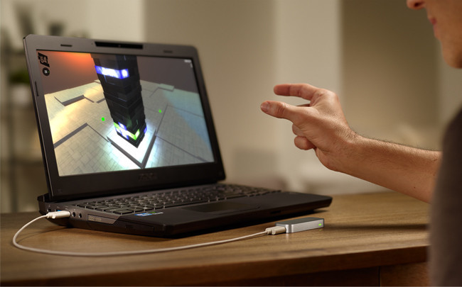
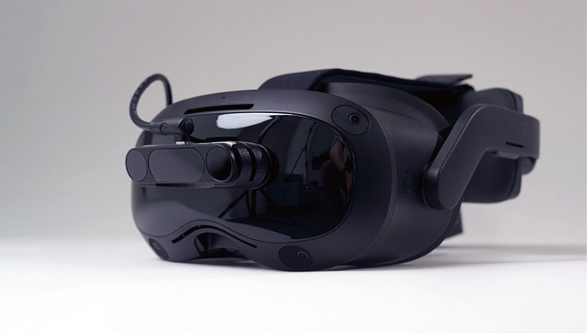

¿Qué es Leap Motion Controller?
El Leap Motion Controller es un dispositivo de entrada de hardware que se diseñó para permitir la interacción con computadoras y aplicaciones mediante gestos y movimientos de las manos y los dedos.
El dispositivo, como se puede ver en la imagen, es una pequeña unidad rectangular que se coloca frente a la pantalla del ordenador o computadora y a través de su software y hardware especializados, el Leap Motion Controller es capaz de capturar gestos y movimientos con alta precisión, lo que permite a los usuarios interactuar de forma natural con aplicaciones y programas sin necesidad de utilizar un mouse o un teclado.
Este dispositivo es utilizado en diversas aplicaciones, desde el control de juegos y aplicaciones de entretenimiento hasta aplicaciones médicas, diseño 3D y realidad virtual. El primer controlador "Leap Motion" fue creado y diseñado por la compañía "Ultraleap" con el fin de poder interactuar con diferentes contenidos digitales de manera natural. Puedes encontrar más información de ello en Leap Motion.
Funcionamiento y Características
El "Leap Motion Controller" se basa en tecnología de cámaras infrarrojas y sensores ópticos para rastrear el movimiento en tres dimensiones:
- Sensores: El dispositivo está equipado con múltiples cámaras infrarrojas y sensores ópticos que capturan imágenes de la zona frente a él.
- Captura de imágenes: las cámaras y sensores capturan imágenes en tiempo real de la zona de detección, que abarca un espacio tridimensional justo frente al dispositivo.
- Procesamiento de datos: para el procesamiento de datos este dispositivo posee un hardware que procesa las imágenes que han sido capturadas antes para detectar los movimientos y posiciones de las manos y los dedos que se encuentren enfrente del dispositivo. Estas imágenes son en infrarrojo y permiten al dispositivo ver y reproducir las manos y los dedos de manera detallada, incluso en condiciones de iluminación variable.
- Software de reconocimiento de gestos: utiliza un software especializado para reconocer y rastrear gestos y movimientos específicos, como deslizar, pellizcar, tocar y mover las manos y los dedos en el espacio.
- Interfaz de usuario: la información sobre los gestos se transmite a la computadora o dispositivo conectado, lo que permite que las aplicaciones y programas respondan a los movimientos de manera correspondiente. Las aplicaciones y programas compatibles con el dispositivo pueden recibir y procesar los datos de diferentes gestos, esto permite que las aplicaciones respondan a los movimientos de las manos y los dedos de los usuarios de manera correspondiente.
La cámara escanea la posición del usuario y crea una representación virtual de las manos en acción, de la misma manera en que lo hace cuando se utiliza con una computadora portátil. Esto se logra al colocar el dispositivo frente al monitor y conectarlo a una terminal compatible a través de un cable USB. El sistema operativo con el que es compatible es Windows 7, 8 y 10, así como Mac OS y Linux. Con esta configuración, es posible capturar los movimientos de las manos, dedos y brazos con una gran precisión. El dispositivo en sí suele constar de dos cámaras monocromáticas y tres LEDs infrarrojos, lo que permite interactuar utilizando gestos y movimientos de las manos. Posteriormente, el fabricante procesa la imagen en la terminal, eliminando el ruido y generando modelos de las manos, dedos y gestos. Además, el sistema ofrece la comodidad de una interfaz de usuario que indica qué movimiento se está ejecutando.
Ventajas y desventajas
| VENTAJAS | DESVENTAJAS |
|---|---|
| Interacción sin contacto: Permite una interacción sin contacto con la computadora, lo que puede ser especialmente útil en situaciones en las que se desea evitar el contacto físico con dispositivos como el mouse y el teclado | Adopción limitada: A pesar de sus ventajas, el Leap Motion Controller no ha sido ampliamente adoptado en comparación con otras tecnologías de interacción, lo que limita su disponibilidad y el soporte de aplicaciones. |
| Precisión en el seguimiento de gestos: Ofrece un seguimiento de gestos preciso y detallado, lo que permite capturar gestos con alta precisión y responder de manera natural a las acciones del usuario. | Falta de aplicaciones populares: La falta de aplicaciones ampliamente adoptadas que aprovechen las capacidades del Leap Motion Controller puede limitar su utilidad para ciertos usuarios. |
| Versatilidad de aplicaciones: Se ha utilizado en una amplia variedad de campos, desde videojuegos y entretenimiento hasta aplicaciones médicas y diseño 3D. Su versatilidad lo hace atractivo para una gama diversa de usuarios y aplicaciones. | Requisitos de hardware: Para un rendimiento óptimo, el Leap Motion Controller requiere un hardware y un sistema operativo específicos, lo que puede ser una limitación en ciertos entornos. |
| Inmersión en la realidad virtual: En el ámbito de la realidad virtual, el Leap Motion Controller mejora la interacción al permitir que los usuarios utilicen sus manos de manera más natural en entornos virtuales, lo que aumenta la inmersión. | Interferencia ambiental: La iluminación y otros factores ambientales pueden afectar la precisión del dispositivo, lo que puede requerir un entorno de uso específico. |
| Desarrollo de software personalizado: Leap Motion proporciona un kit de desarrollo de software (SDK) que permite a los desarrolladores crear aplicaciones personalizadas, lo que fomenta la innovación y la creación de experiencias únicas. | Actualización discontinuada: En 2019, Leap Motion se fusionó con Ultrahaptics para formar "Ultraleap" y desde entonces, el enfoque ha cambiado hacia la interacción háptica, lo que puede afectar el futuro desarrollo y soporte del Leap Motion Controller. |
Fusión de Leap Motion con Ultrahaptics
La fusión de Leap Motion con Ultrahaptics para formar Ultraleap tuvo un impacto significativo en el soporte y el desarrollo continuo del Leap Motion Controller. Esta fusión reunió dos empresas que se destacaban en tecnologías de interacción avanzada, específicamente en tecnología de seguimiento de gestos y la retroalimentación háptica (táctil) . La combinación de Leap Motion y Ultrahaptics en Ultraleap tenía como objetivo aprovechar las fortalezas de ambas compañías para impulsar la innovación en el campo de la interacción persona-ordenador. Con esta fusión, se buscaba crear soluciones más completas y avanzadas que combinaran la detección de gestos con retroalimentación táctil, lo que podría ser especialmente relevante en aplicaciones de realidad virtual, aumentada y mixta, así como en otros campos de la tecnología.
Ultraleap se ha centrado en el desarrollo de tecnologías hápticas que permiten a los usuarios sentir y tocar objetos virtuales en entornos digitales, lo que puede mejorar significativamente la experiencia de usuario en aplicaciones inmersivas. Esto incluye la capacidad de simular la sensación de tocar superficies, interactuar con objetos virtuales y experimentar retroalimentación háptica en tiempo real. Si bien esta fusión resultó en un cambio de enfoque de Leap Motion hacia las tecnologías hápticas, la empresa Ultraleap ha continuado desarrollando soluciones innovadoras en el campo de la interacción persona-ordenador, incluyendo hardware y software que aprovechan tanto la detección de gestos como la retroalimentación háptica.
La fusión de Leap Motion y Ultrahaptics para formar Ultraleap representó un paso significativo en la evolución de las tecnologías de interacción, al combinar el seguimiento de gestos con retroalimentación táctil para crear experiencias más inmersivas y realistas en aplicaciones de realidad virtual, aumentada y mixta, así como en otros campos tecnológicos.
Una nueva generación
La empresa Ultraleap que fue la encargada de la creación el dispositivo "Leap Motion Controller", anunció el lanzamiento de su segunda generación, el "Leap Motion Controller 2". Una idea innovadora de interacción dentro de la tecnología que permite la interacción de los usuarios naturalmente con contenido digital en 3D a través de sus manos y dedos.Leap Motion Controller 2 ha demostrado ser una mejora significativa con respecto a su predecesor, con mejoras en la precisión, resolución, campo de visión, capacidad de seguimiento y compatibilidad con una variedad de aplicaciones y plataformas.
Su diseño de dimensiones reducidas y su capacidad para funcionar con una amplia variedad de plataformas y dispositivos adicionales lo convierten en una herramienta versátil para aquellos expertos apasionados por la realidad virtual, la realidad aumentada y la realidad mixta. Algunas de sus grandes mejoras fueron: la precisión mejorada, lo que permite una experiencia más precisa y realista al interactuar con aplicaciones y entornos virtuales; mayor compatibilidad, ofrece una mayor compatibilidad con una variedad más amplia de aplicaciones y plataformas, lo que aumenta su utilidad y versatilidad; mejora en la detección de gestos, mayor detección y reconocimiento de diferentes gestos y movimientos de las manos, lo que proporciona una interacción más intuitiva y natural con los entornos digitales.
En resumen, el "Leap Motion Controller 2" representa una mejora significativa con respecto a las generaciones anteriores, proporciona experiencias más interactivas y absorbentes a los usuarios mejorando su interacción con el contenido digital. Al utilizar esta tecnología de última generación, podemos mantenernos al día en el ámbito de la industria y ofrece servicios innovadores que pueden promever el éxito de los usuarios.